Etisalat · Dubai · 2018
Capacity
Middle East.
A city in one line.
Connections in light.
Creative direction and artwork by Antoni Gerges, through AntBrush, with MCX. Stage films directed by Antoni and animated with a collaborator.
See the idea at the event ↓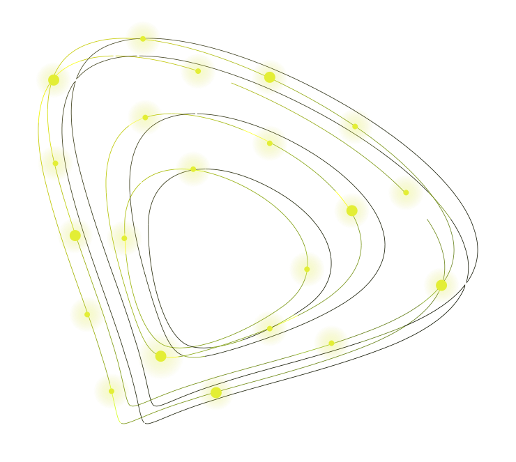
Capacity Middle East
Two partner galas for Etisalat, now e&, co-produced with MCX. For the 2018 event, I led the concept and artwork and directed the stage films with an animator, connecting the evening through a single line of the Dubai skyline.
Read more
Each March, during the Capacity Middle East telecom congress in Dubai, Etisalat’s Carrier & Wholesale arm hosts a private dinner for the international carriers it works with. Etisalat is now e&.
The invitation set the line: “An evening to celebrate our partnership.” The key visual answered: “Celebrating new partnerships & old connections.”
Both drew Etisalat’s mark as points of light joined into orbits, over Dubai drawn as one line.
The stage brief came to me by name on 1 March 2018, six days before the dinner. Nine films for the main screen, one for each moment of the night; two square films for the side walls; three stage plates. An animator made them under my direction.
A year later the dinner moved to Nasimi Beach, Atlantis, The Palm. The film at the top of this page is Etisalat’s event film of that night.
Both nights were won and produced by MCX, where I was Partner, Creative Director & Co-producer, through AntBrush.
The 3D is made for this portfolio from the invitation’s own drawing; the films are as delivered. The invitation’s date line reads 2017, a slip in the artwork: the dinner was on Wednesday 7 March 2018. The 2023 design at the end is a proposal; it was not built.
Points of light.
One mark.
Built here from the 2018 invitation’s own drawing, and the films delivered for the stage.
Points that join
“An evening to celebrate our partnership.” The invitation drew Etisalat’s mark as points of light, joined into orbits.
The city, in one line
Two square walls beside the stage. On each, Dubai draws itself as a single line, mirrored, growing outward.
A film for each moment
One film for each moment of the night, from the fountain to the draw. The last closed on the line: celebrating new partnerships & old connections.
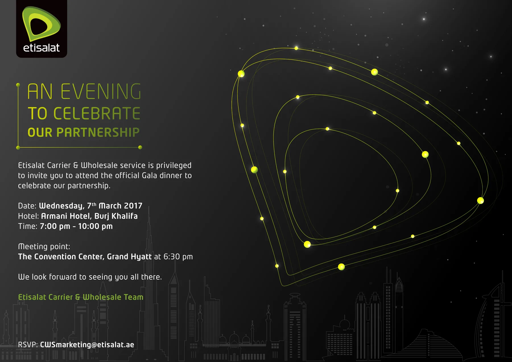
One terrace,
two stages.
The terrace of The Pavilion, beside the Dubai Fountain, nine days before the dinner. Then two stage designs for it: cells of screen in green rims, and towers of light tiles. Renders, 2018.
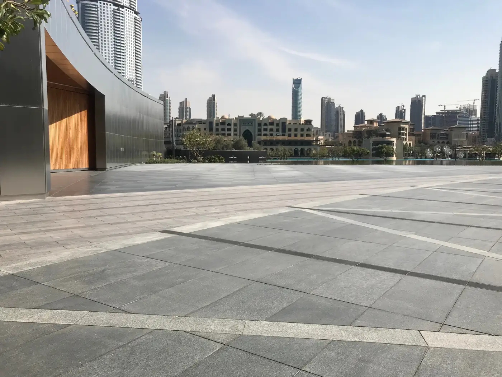
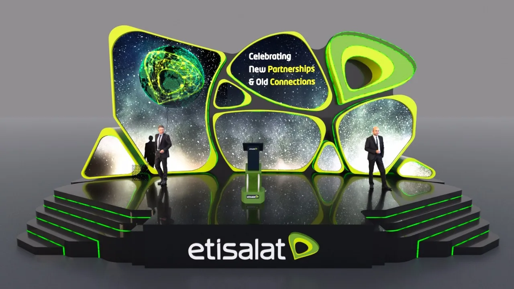
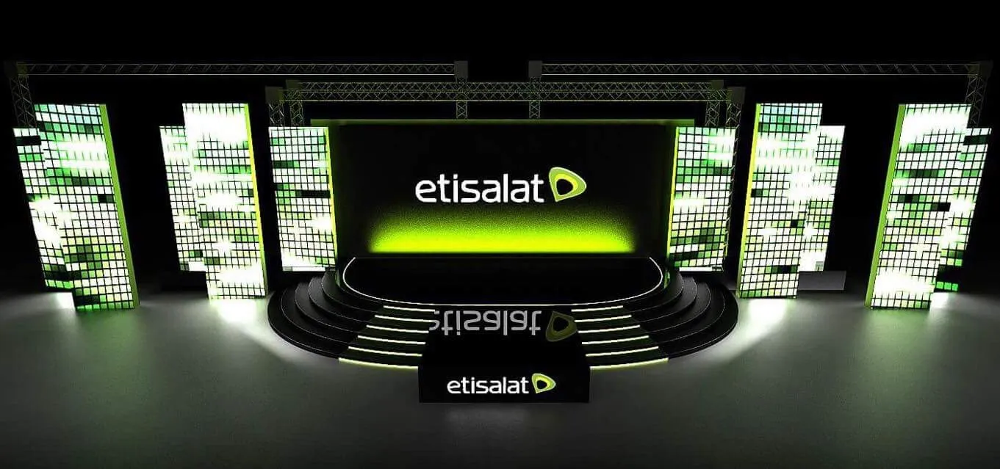
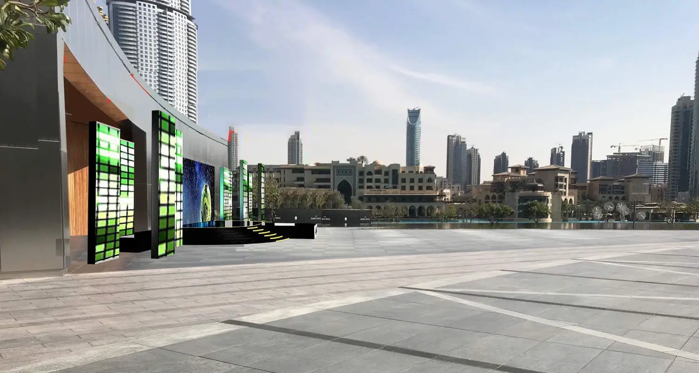
The same words,
at the beach.
A year later the dinner moved to Nasimi Beach, Atlantis, The Palm. The sign at the arrival carried the 2018 line again: an evening to celebrate our partnership.
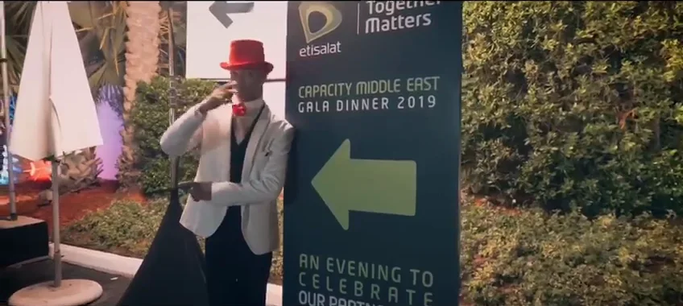
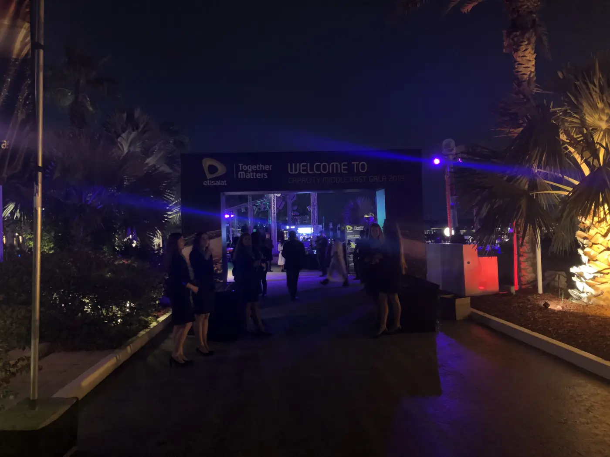
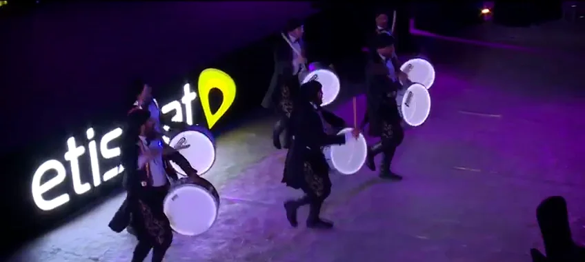
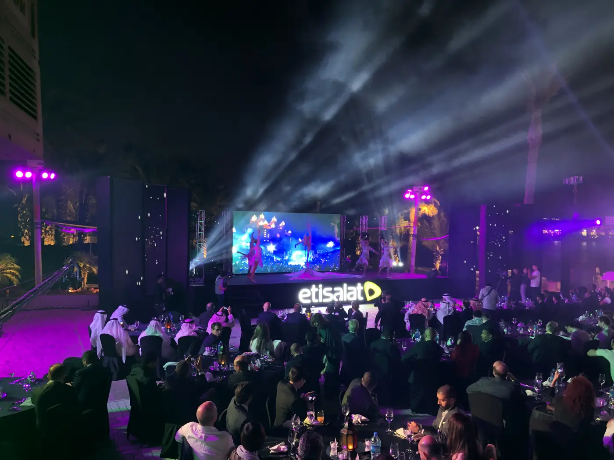
Asked back:
a proposal.
Proposal · not builtIn 2023 e& asked AntBrush, my agency, to bid for the dinner. Its new mark completed the name, Capacity Me&, and one walk led from the waterfront gate to the stage. We drew it two ways.
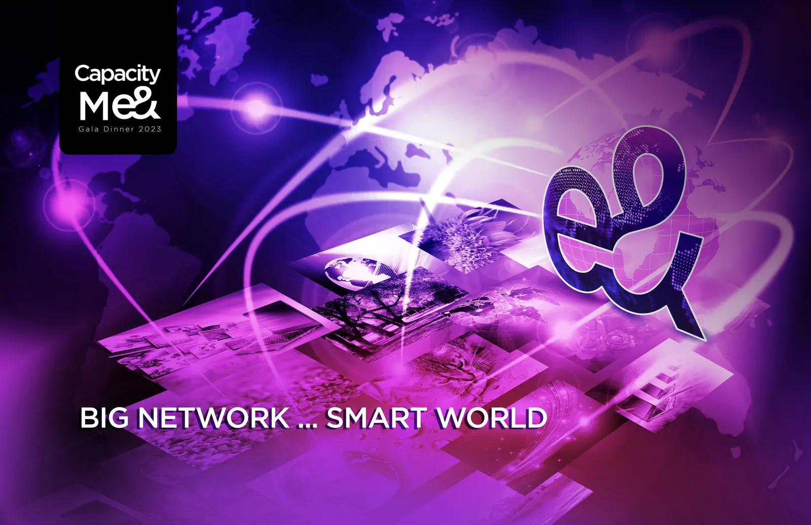
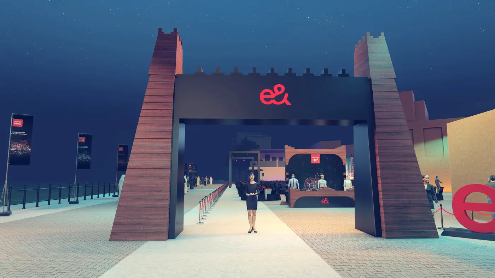
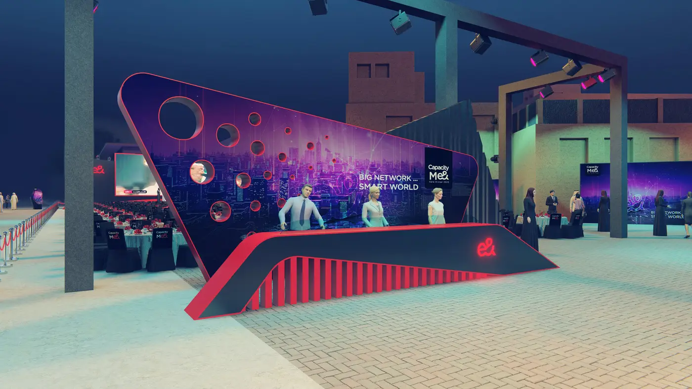
The result.
05 · The resultMore figures
Dates and venues: the running orders of 2 March 2018 and 3 March 2019. Tender: the win of 25 February 2018 and the confirmation of 26 February 2019. Films and plates: the delivered files of 7 March 2018. 2023: the proposal deck and the bid of January 2023.
Creative Director, Brand & Experiential